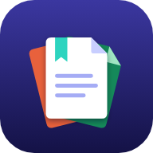
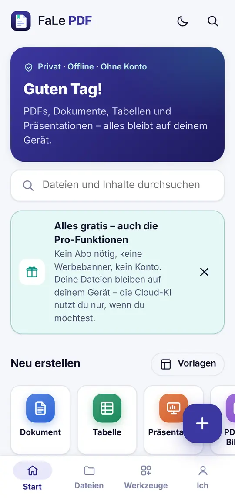
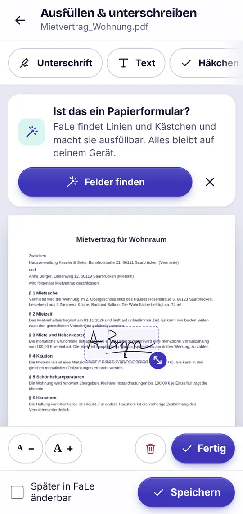
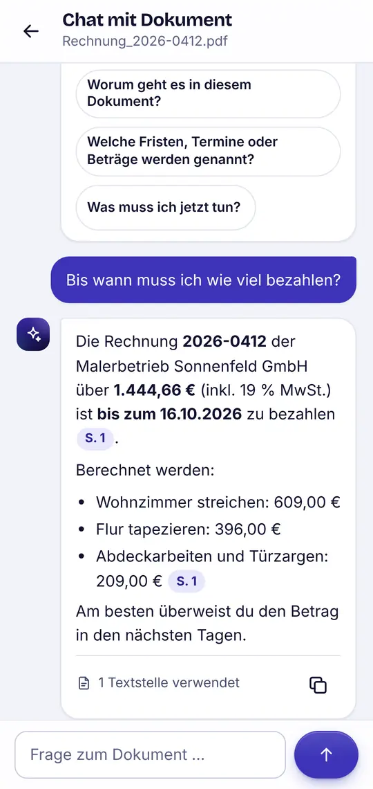

PDFs lesen
- Schneller Viewer mit Suche, Lesezeichen und Inhaltsverzeichnis
- Lesemodus: Text fürs Handy umbrochen, auch Sepia und dunkel
- Vorlesen mit der Sprachausgabe deines Geräts

FaLe PDF EnglishPDFs lesen, ausfüllen, unterschreiben, scannen und umwandeln – dazu Dokumente, Tabellen und Präsentationen. Alles läuft direkt auf deinem Gerät, auch Funktionen, für die andere Apps ein Abo verlangen.
Die Android-App erscheint in Kürze bei Google Play. Bis dahin: im Browser öffnen und „App installieren“ wählen.

Über 40 Werkzeuge für PDF und Office – ohne Wasserzeichen, ohne Anmeldung.


Weil fast alles auf deinem Gerät passiert – und das kostet uns nichts.
Lesen, Unterschreiben, Scannen, Texterkennung, Umwandeln und Bearbeiten laufen direkt auf deinem Handy oder Computer. Dafür brauchen wir keine Server – also gibt es auch nichts zu bezahlen.
Die optionale Cloud-KI verursacht echte Kosten pro Anfrage. Deshalb gibt es täglich ein kostenloses Kontingent.
Keine Werbebanner, kein Tracking, keine Analyse-Tools und kein Verkauf von Daten. Werbung siehst du nur, wenn du selbst ein Video startest.
Ja. Alle PDF- und Office-Funktionen sind gratis – ohne Abo, ohne Konto und ohne Wasserzeichen. Kosten entstehen nur bei der optionalen Cloud-KI: Dafür gibt es täglich kostenlose Anfragen.
Nein. Deine Dateien werden auf deinem Gerät verarbeitet und gespeichert. Nur wenn du die optionale Cloud-KI nutzt, wird der dafür ausgewählte Text an den KI-Dienst gesendet – nach deiner Zustimmung und ohne dass Inhalte gespeichert werden. Teilen oder speichern kannst du Dateien jederzeit selbst – nur dann verlässt eine Datei dein Gerät.
Ja. Unterschrift zeichnen, speichern und in PDFs einsetzen ist kostenlos und ohne Konto möglich – genau wie Formulare ausfüllen und Datum, Text oder Stempel einfügen.
Ja. Alle Werkzeuge außer der optionalen Cloud-KI funktionieren ohne Internet – auch die Texterkennung (OCR). Deren Sprachdaten (Deutsch und Englisch) werden beim ersten Mal einmalig geladen.
Android: Die App erscheint in Kürze bei Google Play. Im Browser (Android, Computer): FaLe PDF öffnen und im Browser-Menü „App installieren“ bzw. „Zum Startbildschirm hinzufügen“ wählen. iPhone/iPad: In Safari öffnen, auf „Teilen“ tippen und „Zum Home-Bildschirm“ wählen.
PDF, DOCX, XLSX, PPTX, CSV, TXT, Markdown sowie Bilder (JPG, PNG, WebP). Über „Öffnen mit“ und „Teilen“ übernimmst du Dateien direkt aus E-Mail, Messenger oder Dateimanager.
Keine Banner und keine Werbung beim Arbeiten. In der Android-App kannst du freiwillig ein Werbevideo ansehen, um zusätzliche KI-Anfragen zu bekommen – mehr nicht.
Die Oberfläche gibt es auf Deutsch und Englisch. Die Briefvorlagen für Kündigung, Widerruf und Co. richten sich nach deutschem Recht.
Ohne Anmeldung, direkt im Browser – oder bald als Android-App.
Die Android-App erscheint in Kürze bei Google Play.